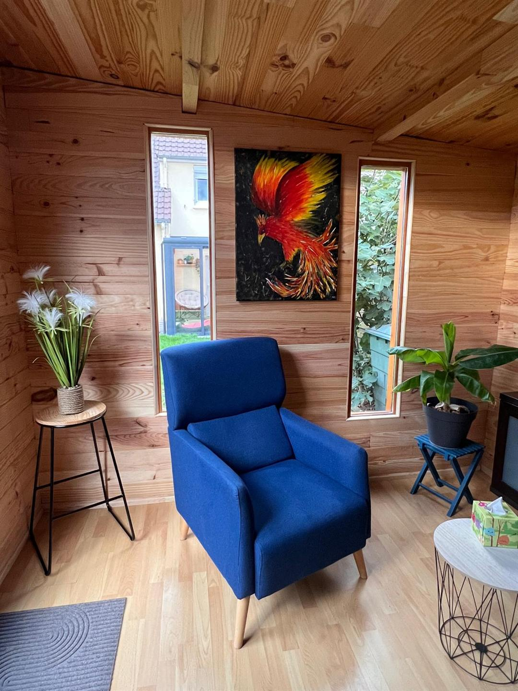
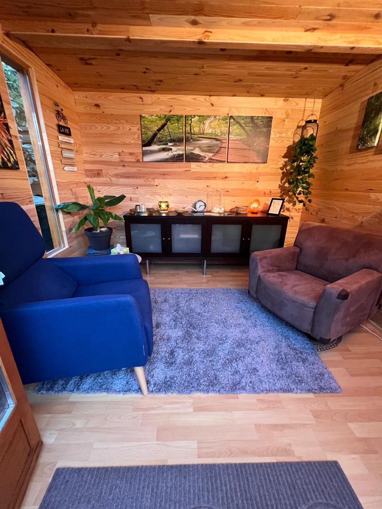

Manipulatrice en imagerie médicale depuis 25 ans, je suis passionnée par mon
métier et profondément engagée dans le bien-être de mes patients.
J'accompagne les personnes qui font face à une chirurgie, une IRM, une endoscopie ou un autre soin médical, mais aussi les aidants qui les soutiennent, et toute personne qui souhaite mieux gérer le stress, qu'il s'agisse d'un examen académique ou des tensions du quotidien.
Vous hésitez avant une première séance ou vous souhaitez simplement comprendre comment cela se passe ? Voici les réponses aux questions que l'on me pose le plus souvent.
Séance
Comment se déroule une séance ?
La séance commence toujours par un échange. On prend le temps de parler de ce qui vous amène, de ce que vous attendez, de ce que l'hypnose représente pour vous, pour comprendre précisément votre situation.
Ensuite, je vous guide à travers un premier exercice de détente pour être bien présent ici et maintenant. C'est aussi un moment important pour créer du lien et installer une relation de confiance.
Une fois cet espace posé, on travaille ensemble avec des techniques concrètes adaptées à ce que vous traversez. Les exercices de confort et de bien-être peuvent être enregistrés pour que vous repartiez avec des repères à refaire chez vous.
Pour les exercices plus profonds, j'adapte l'accompagnement en direct à vos émotions et à ce qui se passe dans l'instant.


Contrôle
Est-ce que je vais perdre le contrôle ?
Non, à aucun moment. Vous restez maître de la situation du début à la fin. Mon rôle est celui d'un guide, pas d'un pilote.
L'hypnose est une compétence naturelle que vous vivez déjà au quotidien. En séance, on apprend simplement à retrouver ce mouvement intérieur sur demande, vers un mieux-être que vous pilotez toujours vous-même.
Efficacité
Est-ce que ça va marcher sur moi ?
Si vous êtes motivé et que vous faites la démarche de venir, oui. Vous n'apprenez pas quelque chose de totalement nouveau : vous apprenez à utiliser une ressource que vous avez déjà.
En séance, on apprend à le faire intentionnellement, au moment où vous en avez besoin.
Rythme
Combien de séances faut-il prévoir ?
Tout dépend de votre demande. Il n'y a pas de réponse universelle, et c'est vous qui décidez du rythme.
Pour une préparation avant une intervention médicale, une seule séance suffit généralement. Pour d'autres situations (douleurs chroniques, anxiété, deuil, troubles du sommeil), plusieurs séances peuvent être utiles.
L'objectif est que vous gagniez en autonomie, avec des outils concrets à utiliser dans votre quotidien.
Médical
L'hypnose est-elle compatible avec mon traitement médical ?
Oui, tout à fait. L'hypnose ne remplace jamais un traitement médical : elle s'inscrit en complément, jamais à la place.
Elle vous aide à devenir acteur de ce que vous traversez : mieux gérer le stress, apprivoiser la douleur et vivre les soins avec plus de sérénité.
Jeunes
Vous accompagnez les enfants et adolescents ?
Oui, avec une condition essentielle : c'est l'enfant ou l'adolescent qui doit vouloir venir. La motivation est au cœur du travail.
Si la demande vient uniquement des parents et que le jeune n'est pas dans la démarche, je préfère orienter vers des confrères mieux adaptés.
Format
Les séances sont-elles disponibles en visio ?
Non. Je fais le choix de proposer uniquement des séances en présentiel, de manière réfléchie.
Pendant une séance, je m'appuie aussi sur des signaux non verbaux (posture, micro-changements, respiration) qui ne se perçoivent pas toujours bien à l'écran.
Pour garantir une qualité d'accompagnement optimale, je privilégie donc le même espace, en face à face.
Idées reçues
L'hypnose c'est comme à la télé ou sur scène ?
Non. L'hypnose thérapeutique n'a rien à voir avec l'hypnose de spectacle.
Je pratique l'hypnose Ericksonienne, dans une approche douce, respectueuse et centrée sur vos ressources. Vous restez acteur de la séance du début à la fin.